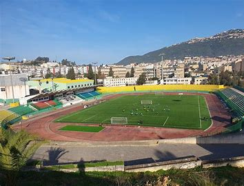
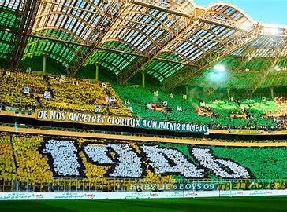
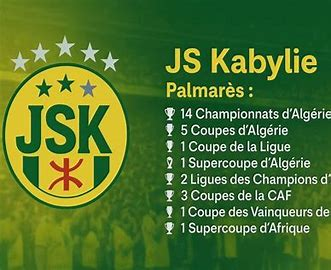

The legendary atmosphere of the November 1st Stadium

🏟️ November 1st Stadium - Tizi Ouzou

🎌 The fans on fire!

🏆 The 28 official titles
Supporters create incredible mosaics.
Adapted for the stadium, the Kabyle anthem echoes.
Fiery atmosphere behind the goals.
The legendary “Fantasistes” and “Amazigh Boys”.